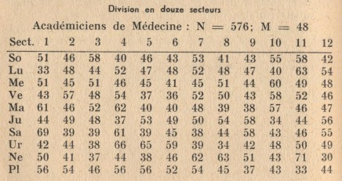
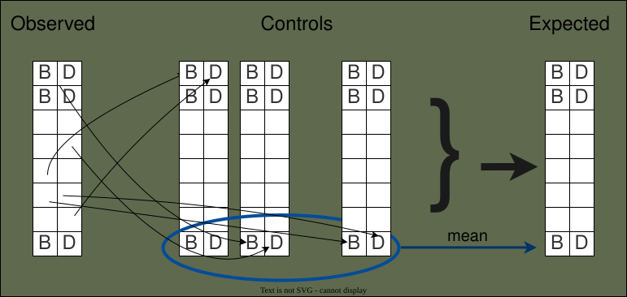

What are we doing ?
Data
We are processing dates, for example the data sent by Didier Castille:
It contains 591 936 lines with 3 or 4 dates:
- Mother birth day
- Father birth day
- Child birth day
- Wedding date

Planets
For each date, we compute planetary positions. These are the ecliptic longitudes of the planets at a given date, expressed in degrees, between 0 and 360.

+-----+------------+ | day | 1928-03-28 | +-----+------------+ | SO | 7.577 | | MO | 97.618 | | ME | 340.585 | | VE | 342.739 | | MA | 322.279 | | JU | 14.344 | | SA | 259.157 | | UR | 3.626 | | NE | 146.828 | | PL | 103.775 | | NN | 73.017 | +-----+------------+
Here are the main planets:
| Planet | Sun | Moon | Mercury | Venus | Mars | Jupiter | Saturn | Uranus | Neptune | Pluto |
|---|---|---|---|---|---|---|---|---|---|---|
| IAA code | SO | MO | ME | VE | MA | JU | SA | UR | NE | PL |
| Symbol | ☼ | ☾ | ☿ | ♀ | ♂ | ♃ | ♄ | ♅ | ♆ | ♇ |
Distributions
Then we compute distributions:

We take each planet separately and represent their positions in a single drawing (example 1).
Then we group the positions by bins (36 bins of 10° in example 2).
This grouping is called a distribution.
This gives one distribution per planet.

The program handles two types of distributions: Single date distributions and Several dates distributions.
Expected distributions
The distributions computed to represent the original data are called the observed distributions.To see if these distributions show anomalies, we need to compare them to the expected distributions, the distributions that we should observe "in theory".
This program uses two different ways.
Control groups
Control groups are fictional groups obtained by randomly shuffling the data.
Several control groups are built, and the mean (average) distributions are computed.This is supposed to produce what we should observe in theory.
Average values
This method can be used for tabular data without computing control groups, detailed in page Expected distributionsStatistical tests
Once the expected distributions are computed, it is possible to use statistical tests to see if the comparison between observed and expected distributions show anomalies.The first test is the chi-square test, which indicates if the difference between observed and expected distributions is significant.
If a difference is significant, the effect size is computed to know how much the anomaly affects the individuals of the group.
About
Observe is a CLI (Command Line Interface), a tool used in a terminal (console) which pemits to issue commands to work on the data.For example:
php run-observe.php death-fr control 1-100Means: "for study
death-fr, compute control groups, from 1 to 100".
See page Usage
Program started in december 2020 by Thierry Graff to compute Births in France in 2000 distributions for Nick Kollerstrom.
Rewritten in 2026 to study Deaths in France since 1970.
Program developed and tested under Linux (Debian 13) with php 8.5. A priori, it should also work under Windows and Macintosh.